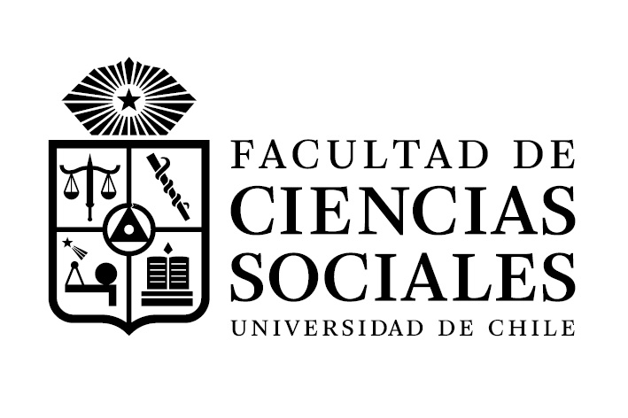

2025-07-02
SEPA-VID es el principal repositorio institucional de datos de investigación. Sin embargo, Para hacer uso estratégico de esta información se requiere:
Dedicar tiempo al procesamiento de la base de datos
Cruzarla con otras bases para recoger variables de interés (caracterización de los académicos, palabras claves, presupuesto, colaboraciones, internacionalización).
Como consecuencia, se dificulta la posibilidad de identficar tanto proyecto adjudicados como aquellos que fueron presentados pero no lograron la adjudicación.
Sin un sistema de gestión de información, resulta díficil identificar perfiles de académicos que no se están adjudicando proyectos individuales o asociativos, así como tomar líneas de acción específicas.
Desarrollar un sistema local e integrado de gestión y visualización de información científica que permitea consolidar, actualizar y utilizar estratégicamente los datos de proyectos de investigación en FACSO.
Base de datos integrada de proyectos de investigación, tanto adjudicados como postulados, en coordinación con el Colaboratorio de Investigación Social.
Base de datos auxiliares: Enfocadas en identificar redes de colaboración externa
Visualización: Dashboards con información sintética de los principales indicadores relacionados a la investigación en la Facultad.
Reportes: Informes con acceso diferenciado a información agregada e individual
Documentación: Libros de códigos, manuales de uso y reportes técnicos
Este sistema permitirá identificar la adjudicación de proyectos en relación a las trayectorias académicas, permitiendo distinguir:
Académicos que postulan y se adjudican proyectos
Académicos que postulan y no se adjudican proyectos
Académicos que dejaron postular
Factores asociados a estas trayectorias (por ejemplo: edad, jerarquizaciones)
Desde ahí, será posible establecer líneas de acción tales como nuevos fondos o asesorías estratégicas.
Research center in democracy, activism and radicalization (RADAR) – Claudia Zuñiga, Directora (Instituto Milenio)
Centro de Estudios de Conflicto y Cohesión Social (COES) – Emmanuelle Barozet, Directora (Centro de Interés Nacional)
GERO Center for Healthy Longevity and Public Policy – Daniela Thumala, Directora Alterna (Centro de Interés Nacional)
| Título | Director/a | Departamento |
|---|---|---|
| Daniella Jofré | Tecnologías alfareras y paisajes isotópicos en territorios indígenas de Sudamérica | Antropología |
| Susan Sanhueza | Millennium Nucleus on social exclusion, violence, and mental health in childhood | Educación |
| Esteban Radiszcz | Millennium Nucleus of Interdisciplinary Research on Subjectivities (MINUS) | Psicología |
| Claudio Duarte | Núcleo Milenio Juventudes y aspiraciones en tiempos de crisis: desafíos contemporáneos desde la Educación Secundaria Pública (JUVENTUDES) | Sociología |
| Rodrigo Asún | Millennium Nucleus RADAR: Research on Youth Activism, Democracy, and Radicalization | Sociología |
| Mario Laborda | Núcleo Milenio para la Investigación del Miedo y la Ansiedad (MIMA) | Psicología |
La Facultad aumentó el número de postulaciones con respecto al año anterior.
| Tipo de Investigador | Concurso 2025 | Concurso 2026 | Aumento |
|---|---|---|---|
| Coinvestigador | 44 | 49 | 11,4% |
| Investigador responsable | 24 | 27 | 12,5% |
Solamente los departamentos de Antropología y Sociología disminuyeron sus postulaciones.
| Departamento | Concurso 2025 | Concurso 2026 |
|---|---|---|
| Psicología | 6 | 6 |
| Antropología | 7 | 3 |
| Educación | 3 | 7 |
| Sociología | 5 | 3 |
| Trabajo Social | 3 | 8 |
| Departamento | Iniciación 2025 | Iniciación 2026 |
|---|---|---|
| Antropología | 1 | 2 |
| Educación | 0 | 0 |
| Psicología | 9 | 2 |
| Sociología | 3 | 0 |
| Trabajo Social | 5 | 3 |
| Investigadores Externos | 2 | 5 |
| Total | 20 | 12 |
| Departamento Patrocinante | Postdoc 2025 | Postdoc 2026 |
|---|---|---|
| Antropología | 1 | 2 |
| Educación | 1 | 1 |
| Psicología | 3 | 4 |
| Sociología | 1 | 2 |
| Trabajo Social | 1 | 0 |
| Total | 7 | 9 |
Proponer un modelo institucional que fortalezca y articule la incorporación de estudiantes de pregrado en procesos de investigación, con foco en:
Para ello, se requiere un estudio diagnóstico que identifique:

DIP – FACSO